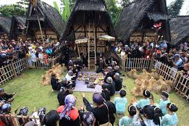
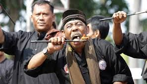
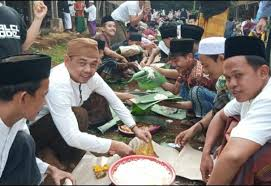

Selamat Datang di Kebudayaan Banten
Provinsi Banten memiliki kebudayaan yang kaya dan beragam, mencerminkan sejarah panjang serta keberagaman etnisnya. Salah satu kesenian tradisional yang terkenal adalah Debus, yang melibatkan aksi-aksi berbahaya seperti menusuk tubuh dengan benda tajam dan berjalan di atas bara api, sering diiringi dengan musik tradisional dan mantra-mantra. Seni tari Rudat juga merupakan bagian penting dari budaya Banten, ditampilkan dalam acara-acara adat dengan gerakan dinamis dan musik pengiring. Selain itu, Pencak Silat, seni bela diri tradisional, menjadi bagian integral dari upacara adat dan kehidupan sehari-hari masyarakat. Instrumen musik tradisional seperti Angklung Gubrag, yang terbuat dari bambu, sering dimainkan dalam kelompok untuk menghasilkan melodi khas pada berbagai acara budaya. Upacara adat Seren Taun, sebuah syukuran atas hasil panen yang dilakukan oleh masyarakat adat Baduy, melibatkan berbagai ritual, tarian, dan doa untuk kesejahteraan. Arsitektur rumah adat Baduy juga menunjukkan kekhasan budaya lokal, dengan rumah-rumah yang dibangun dari bahan alami seperti bambu dan kayu. Selain itu, tradisi lisan pantun, yang terdiri dari sajak empat baris berirama, sering digunakan dalam berbagai acara sebagai bentuk komunikasi dan hiburan yang sarat makna dan pesan moral. Semua elemen ini mencerminkan kekayaan dan keanekaragaman tradisi lokal yang terus dijaga dan dilestarikan oleh masyarakat Banten.
Adat Istiadat
1. Upacara Ngawalu
Upacara adat pernikahan di Banten melibatkan tradisi seperti ngidih (mengajukan lamaran), ngarep surung (pertemuan kedua belah pihak), serangkaian ritual adat (sajen, siraman, sungkeman), akad nikah, resepsi pernikahan, dan mappaci (berbagi makanan kepada tetangga). Tradisi ini kaya akan nilai-nilai kearifan lokal dan turun-temurun.
Seni
1. Debus Surosowan
Debus Surosowan menjadi salah satu kesenian yang paling populer dari Banten. Bukan hanya di kalangan masyarakatnya saja, namun kesenian yang satu ini bahkan dikenal hingga seluruh nusantara. Debus merupakan atraksi yang dilakukan dengan menggunakan benda tajam, seperti: golok, paku, air keras, dan yang lainnya.
Tradisi
1. Ngariung
Tradisi ini merupakan salah satu tradisi warga Banten yang berisikan kegiatan untuk memanjatkan doa, shalawat, dan mengaji ayat-ayat suci Al-Qur’an secara bersama-sama. Ngariung biasanya digelar untuk memperingati momen-momen spesial, seperti kelahiran bayi, akikah, dan acara syukuran lainnya.
Bahasa
1. Bahasa Sunda Banten
Bahasa Sunda adalah bahasa daerah yang paling banyak digunakan di Banten. Bahasa ini dituturkan oleh sekitar 80% penduduk Banten. Bahasa Sunda banyak digunakan masyarakat di wilayah Kabupaten Lebak, Pandeglang, sebagian masyarakat Kabupaten/Kota Serang, dan sebagian masyarakat di Kabupaten Tangerang.
Nilai-Nilai Budaya
1. Kebersamaan
Masyarakat Banten dikenal sangat menjunjung tinggi nilai kebersamaan dan gotong-royong dalam kehidupan sehari-hari.